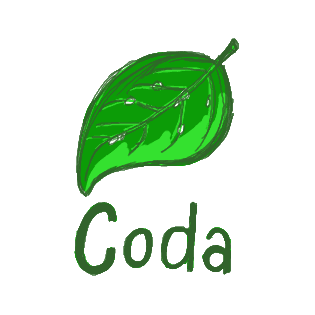

<ion-view title="'Home'">
    <!-- 头部 -->
    <ion-header-bar class="bar-positive" align-title="center">
        <h1 class="title title-center">home</h1>
        <div class="buttons">
            <button class="button">下一页</button>
        </div>
    </ion-header-bar>

    <!-- 中间内容 -->
    <ion-content>
        <!-- <h1 class="title title-center">Hello Wrold!</h1> -->
        <ion-slide-box>
            <ion-slide ng-repeat = "item in views.slideData track by $index">
                <div class="box" style="width :100%;height: 200px;">
                    
                </div>
            </ion-slide>
            <!-- <ion-slide>
                <div class="box">
                    
                </div>
            </ion-slide>
            <ion-slide>
                <div class="box">
                    
                </div>
            </ion-slide> -->
        </ion-slide-box>
        <ion-list>
            <ion-item ng-repeat="item in views.listData track by $index" ng-click="views.goDetail(item)">
                <p style="font-size: 21px;">姓名: {{ item.Name | toUpperCaseText }}</p>
                <p style="font-size: 21px;">城市: {{ item.City | toLowerCase }}</p>
            </ion-item>
        </ion-list>
    </ion-content> 

    <!-- 底部 -->
    <ion-footer-bar align-title="center" class="bar-positive">
        <h1 class="title title-center">底部</h1>
    </ion-footer-bar>
</ion-view>
<script src="js/controller/detailCtrl.js"></script>